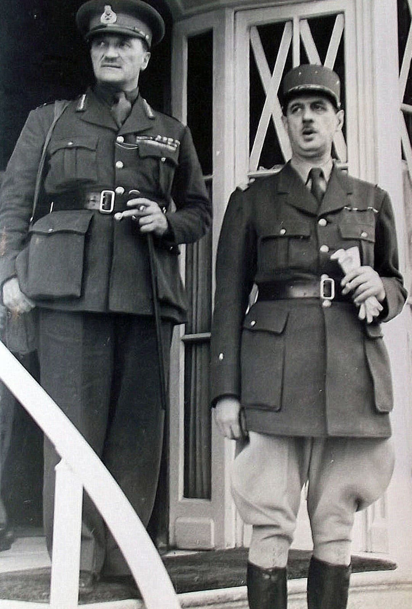

Edward Louis Spears est l’un des acteurs essentiels de la naissance de la France Libre. Officier de liaison britannique auprès du gouvernement français en 1940, il joue un rôle décisif dans l’exfiltration de Charles de Gaulle vers Londres, permettant au futur chef de la France Libre d’échapper à l’effondrement politique et militaire de juin 1940.
Nom : Edward Louis Spears
Dates : 1886 – 1974
Nationalité : Britannique
Fonction : Officier de liaison auprès du gouvernement français
Rôle : Exfiltration de De Gaulle • Soutien politique et logistique à la France Libre
Spears est un officier britannique expérimenté, parlant parfaitement français, et chargé d’assurer la coordination entre Londres et Paris durant la débâcle de 1940. Sa position stratégique lui permet d’observer de près l’effondrement du gouvernement français et de comprendre l’importance de soutenir les rares responsables refusant l’armistice.
Dans la nuit du 16 au 17 juin 1940, Spears organise l’exfiltration de De Gaulle vers Londres. Il prévient Churchill, trouve un avion, accompagne De Gaulle et s’assure qu’il puisse quitter la France avant l’annonce officielle de la demande d’armistice. Sans Spears, De Gaulle aurait probablement été bloqué en France, empêché de lancer l’Appel du 18 juin et de fonder la France Libre.
Spears est l’un des premiers Britanniques à reconnaître le potentiel politique de De Gaulle. Il facilite son installation à Londres, lui ouvre les portes du gouvernement britannique et contribue à lui donner une légitimité internationale. Leur relation est fondée sur une vision commune : la lutte doit continuer, même si la France métropolitaine est vaincue.
Edward Spears est un acteur majeur mais souvent oublié de la naissance de la France Libre. Son rôle logistique, diplomatique et politique a permis à De Gaulle de devenir la voix de la résistance extérieure. Il incarne la coopération franco-britannique au moment le plus critique de la guerre.